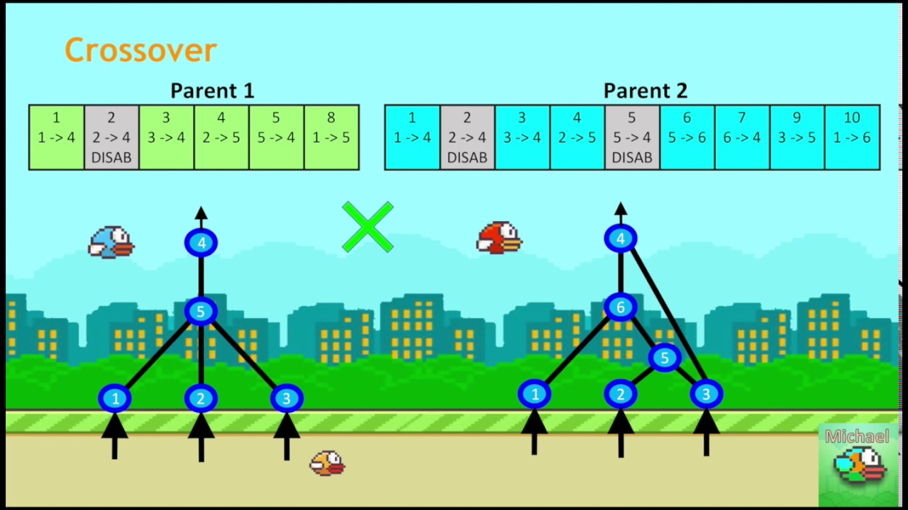
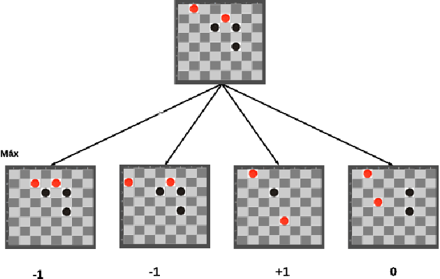
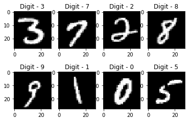

Portfolio
-
NEAT Flappy Bird
Implemented the NEAT genetic algorithm to play the game flappy bird. This was implemented with JS and was created during Independent Studies CS in high school
-
Checkers AI (Unfinished)
Used artificial intelligence algorithms and computer vision in order for a computer to play a game of checkers against a human player. This program started by using a minimax algorithm in order to determine the best move for the computer. Than a computer vision library was started to be developed in order to determine where in an image checkers pieces are.
-
Strictly Deliveries API
Worked on the backend api for the strictly deliveries website. This project was worked on during my summer 2021 internship with Magyk Inc
-
Multi Layer Perceptron From Scratch
Developed a multi layer perceptron from scratch in order to classify MNIST handwritten digits. This code was written in javascript and the webpage allowed for a selection of a file to try and classify if possible.